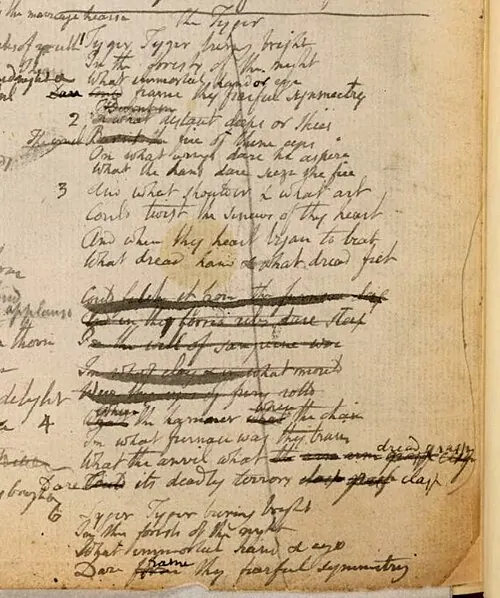
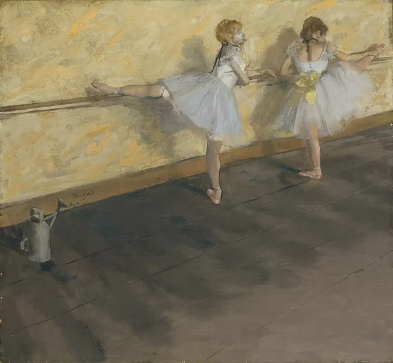

Reconhecer quem conta
Em quem confias quando alguém conta?0 de 4 peças feitas
Lente
Observa uma escolha, experimenta uma regra e cria uma peça tua.
Junta material, trabalha-o e põe uma ideia tua à prova, passo a passo.
como os outros fizeram
Porque é que resulta?
Os dois percursos do bloco Observar →
uma regra de cada vez
Que escolha queres treinar?
Os três percursos do bloco Treinar →
uma peça, com palavras e imagens
Como levas uma ideia mais longe?
Os cinco percursos do bloco Criar →
0 de 6 peças feitas
0 de 5 peças feitas
0 de 5 peças feitas
0 de 4 peças feitas
0 de 5 peças feitas
0 de 49 peças feitas
O que fizeste fica só neste aparelho. Abrir uma peça não a marca como feita.
O ficheiro guarda só os estados, sem respostas nem textos.